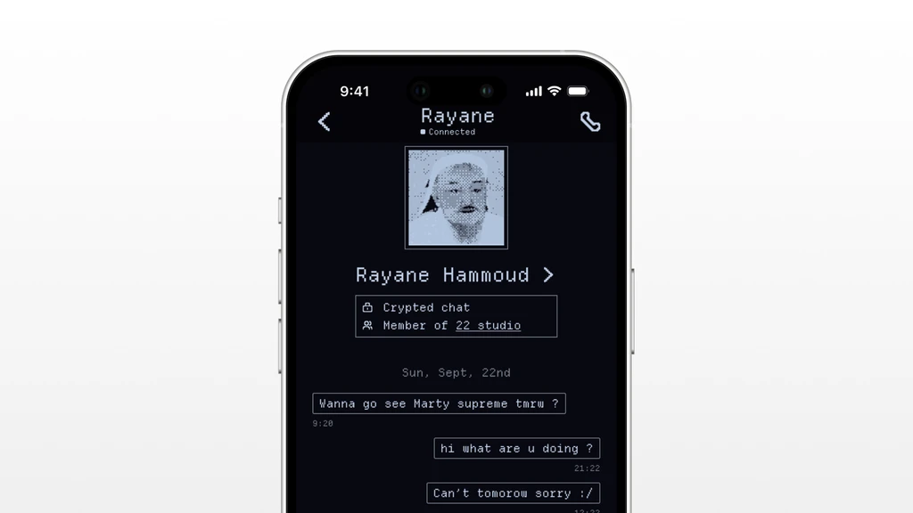
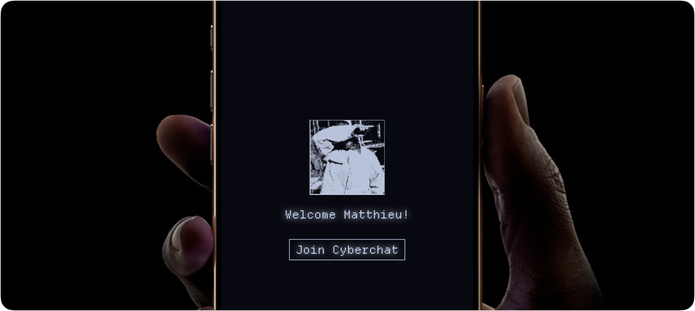
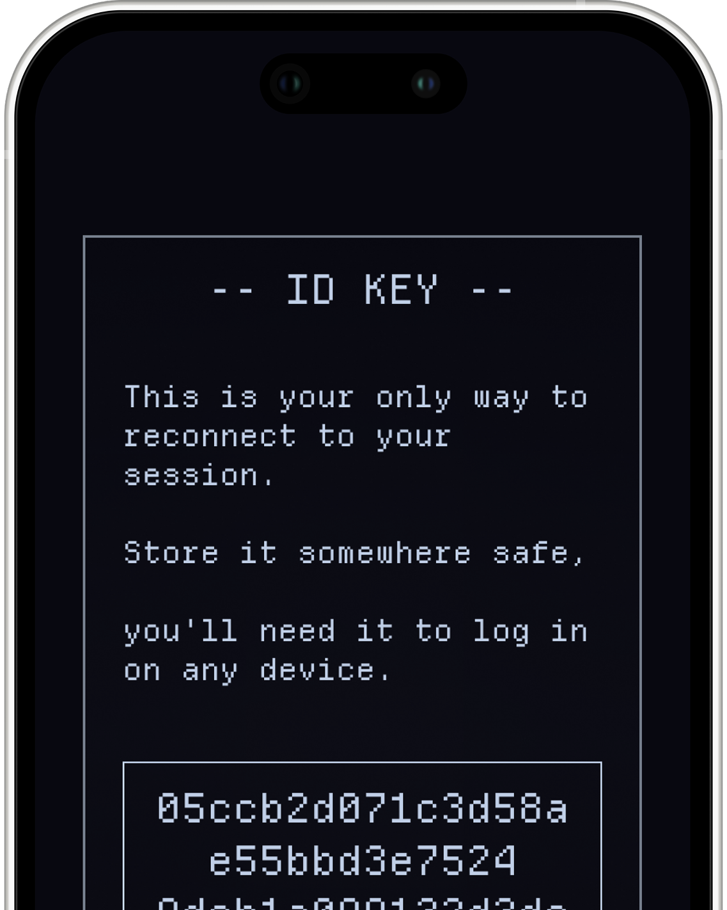
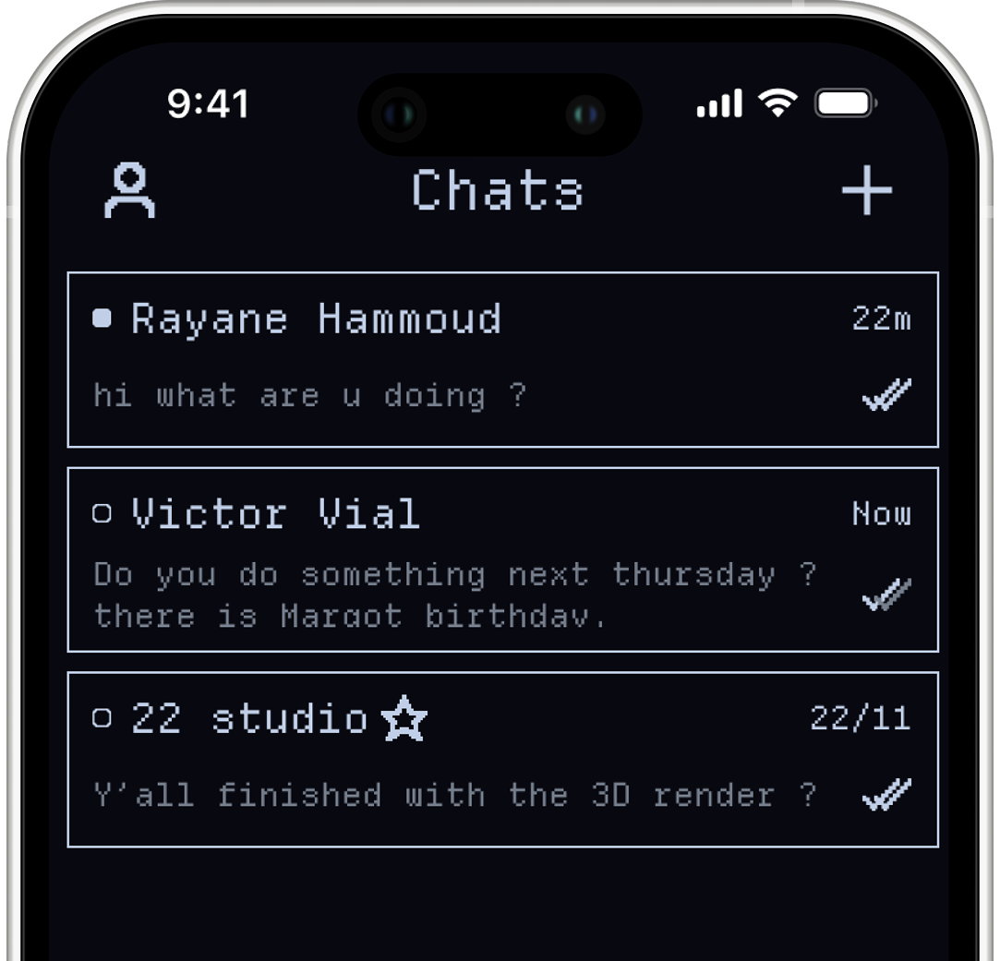
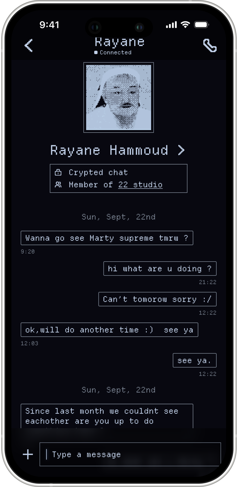
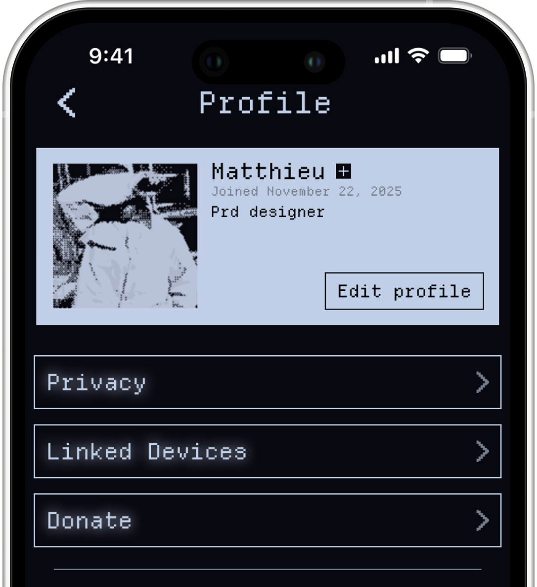
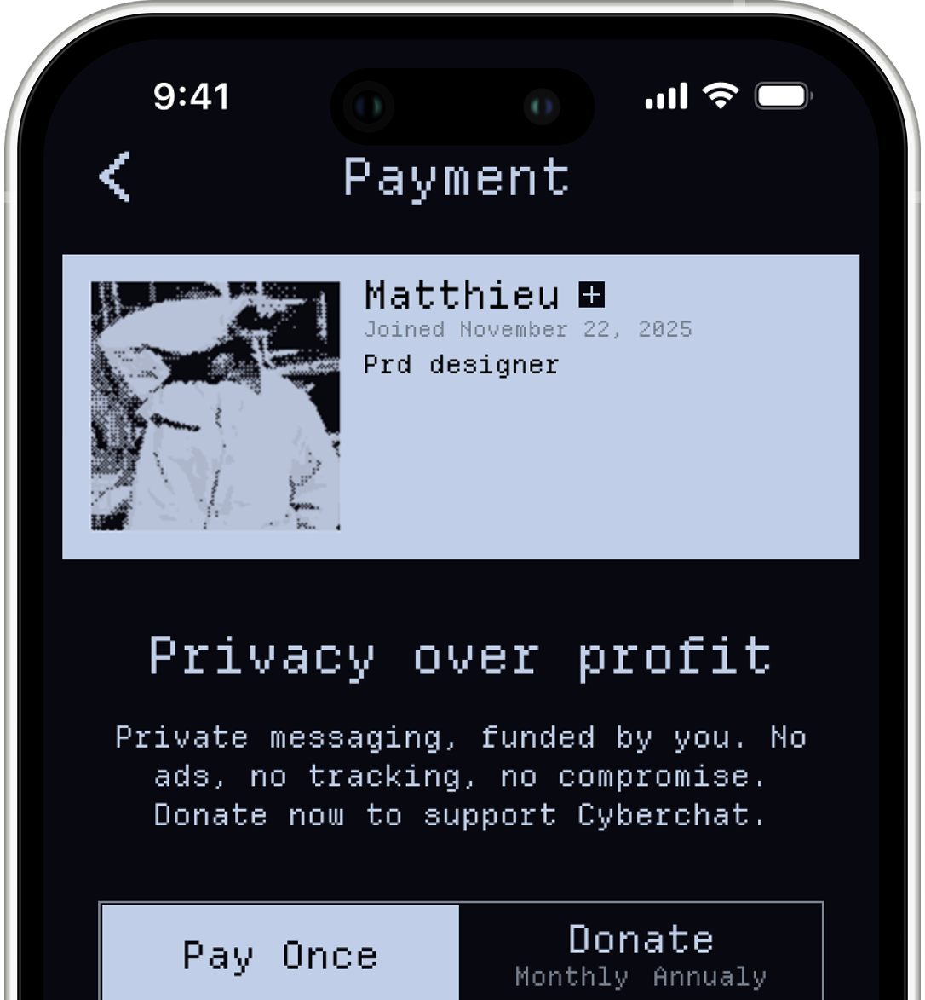
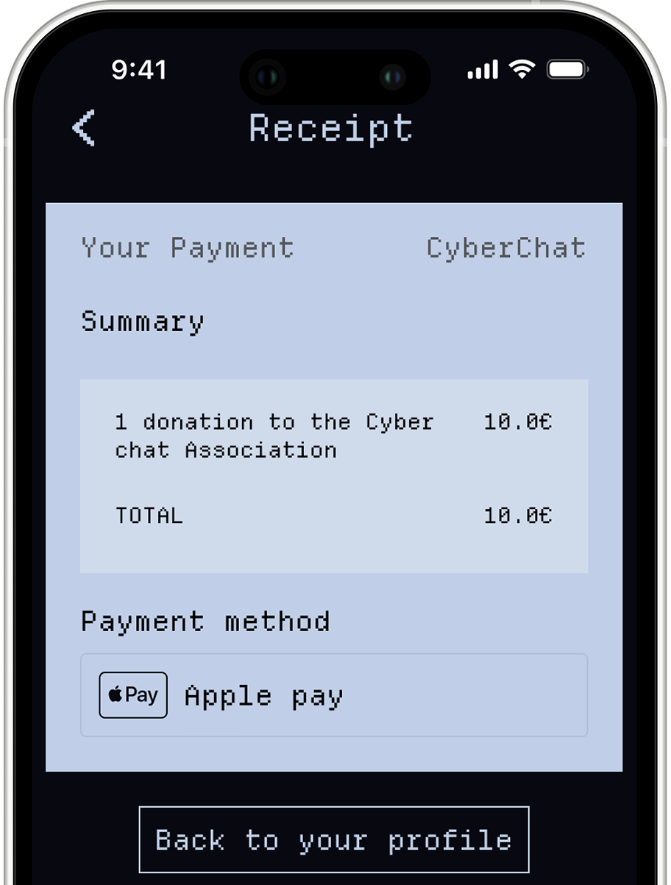

Back
CyberChat · 2026 · Showcase
CyberChat
A messaging concept
A messaging app built around anonymity: no email, no phone number, just a unique key generated at onboarding. Its retro identity takes after the Signal Foundation.

Privacy by design, not by settings.
Five screens, from the first launch to the receipt.
The ID key
The first thing the app does: generate your unique identifier and hand it to you.


Chats & calls
Chats and calls live on the same page, one tap apart.

Smart context
A small card under each contact shows encryption status and shared groups.

Profile & settings
A dithered avatar, your join date, and everything that shapes your account.

Privacy over profit
Donations instead of ads or tracking: funded by users, with no compromise.


